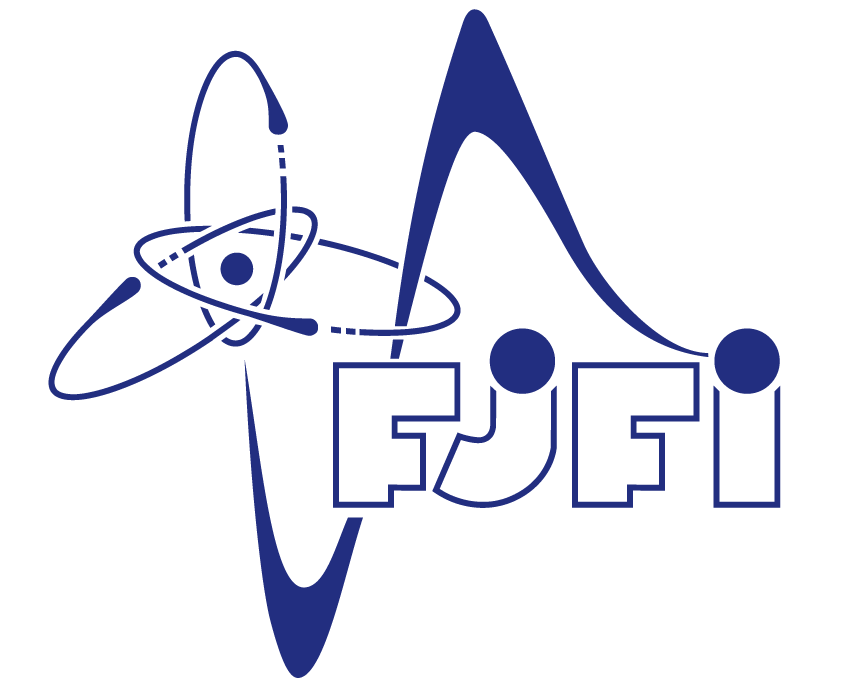
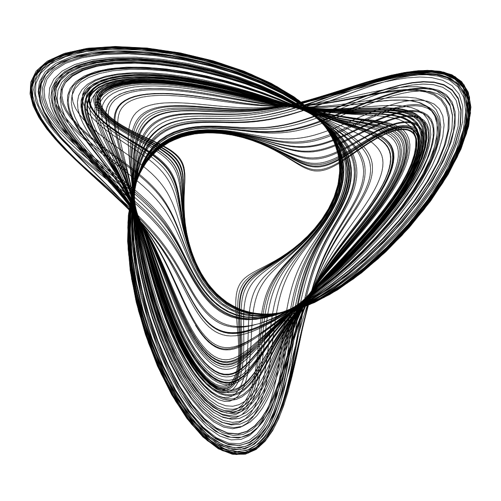
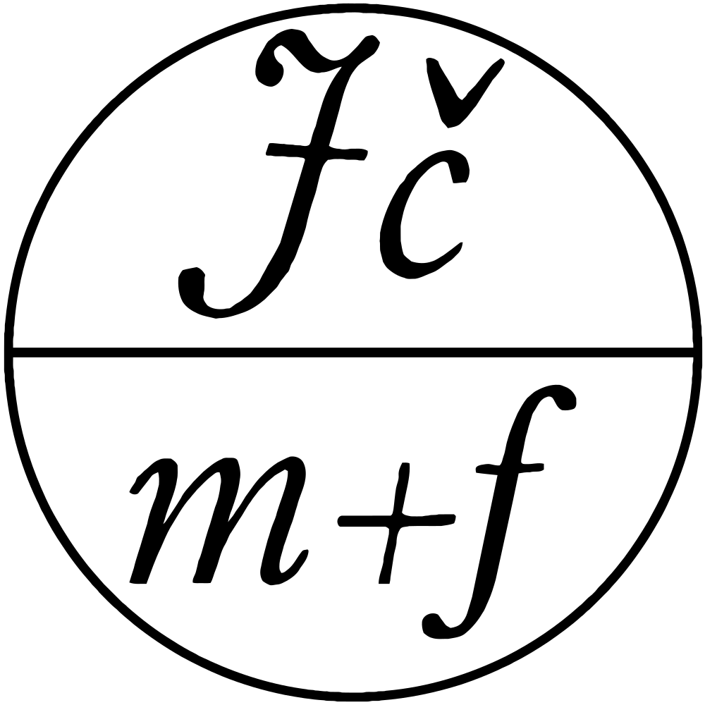

Backing
Integration Bee FJFI podporují tito institucionální partneři:



MIT Integration Bee, akorát ne na MIT, ale na daleko prestižnějším ČVUTu. Již dva roky oceňujeme nejlepší studenty v integrálním počtu a vysíláme je do světa. Máme jedno online kolo a finálové kolo v prostorách FJFI a řešíme určité Riemannovské integrály. Zbytek najdeš v pravidlech.
Soutěž Integration Bee FJFI je vedena studenty z fakulty matematiky na FJFI a je primárně určena pro motivované středoškoláky a studenty bakalářského ročníku, nebo pro doktorandy co stále umí integrovat a shání přivýdělek.
Nedělají ti problémy následující integrály?
Pokud ne, soutěž je právě pro tebe!
Soutěž se koná ke konci zimního semestru. Úvodní kolo je vždy online a je otevřené po celý den. Úspešní řešitelé postoupí do finále na Trojanku (Budova Trojanova 13, Praha 2), kde je čekají fanoušci, celodenní catering a playoff pod dohledem odborné komise.
Registrace probíhají na začátku zimního semestru, tj v září. Online formulář pro nezávaznou příhlášku na rok 2026 lze najít zde. Blizší informace hledejte v sekci ročníku 2026.
Oficiální Program zde.
Pravidla úvodního kola a řešená sbírka příkladů zde.
Pravidla finálového kola a sbírka typových příkladů zde.
Ceny se liší v závislosti na sponzorech. Zpravidla se jedná o kratší stáž u generálních sponzorů, společnou odměnou až 10.000kč a Zlatý integrál pro vítěze. Studenti 1. ročníku FJFI získávají bonusové body v zápočtovém testu matematické analýzy 2.
Ceny na minulém ročníku:
Prohlédněte si zadání a fotografie z předchozích ročníků:
Integration Bee FJFI podporují tito institucionální partneři:


